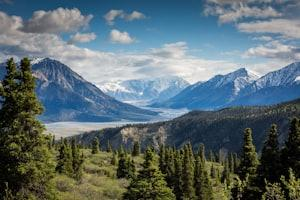
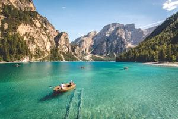
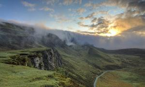
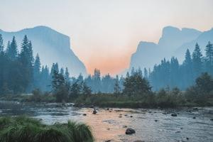

A maior e mais segura operadora de rafting e esportes de aventura de toda a região.
Corrente Viva Rafting

Nossa Missão
Nossa missão é transformar cada descida em rio em uma experiência segura, emocionante e memorável. Valorizamos aventura, respeito à natureza, trabalho em equipe e atendimento acolhedor para que cada cliente sinta a energia da água e a confiança de remar com especialistas.

História
A Corrente Viva Rafting nasceu da paixão de guias locais por esportes de aventura e pela beleza dos rios da região.
O que começou como pequenos grupos entre amigos se tornou uma empresa dedicada a oferecer experiências únicas, com foco em segurança, diversão e conexão com a natureza.
A aventura está te esperando!



